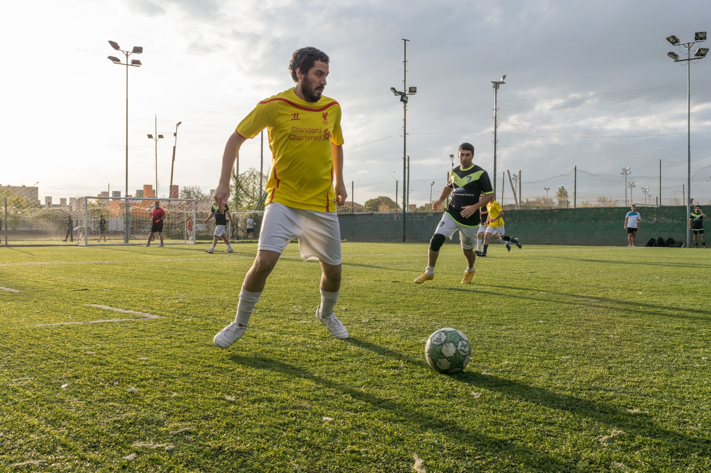

Más que un partido
Ensayo
El fútbol es un fenómeno cultural capaz de transmitir historias, valores y experiencias que incluso quienes no lo consumen pueden disfrutar. ¿Por qué un deporte que muchos consideran aburrido o irrelevante ha logrado convertirse en una de las expresiones culturales más influyentes del mundo?
A lo largo de su historia, el fútbol ha sido considerado uno de los espectáculos deportivos más influyentes del planeta. No obstante, esta popularidad no implica que todas las personas se sientan atraídas por él. Para muchos, el fútbol es sinónimo de transmisiones extensas, fanatismo exagerado o discusiones interminables. Algunos lo perciben como aburrido, repetitivo o incluso superficial. Estas apreciaciones, aunque válidas desde la experiencia individual, suelen enfocarse únicamente en la dinámica del juego y dejan de lado su dimensión sociocultural. Comprender el fútbol como un fenómeno cultural permite descubrir un universo simbólico, emocional y comunitario que puede resonar incluso en quienes no consumen este deporte.
En primer lugar, el fútbol desempeña un papel fundamental en la construcción de identidades colectivas. Según Giulianotti (2015), este deporte funciona como “un espacio simbólico donde las comunidades negocian y expresan quiénes son”. De esta manera, un club representa mucho más que un equipo: encarna la historia, el territorio y la memoria compartida de una comunidad. En diversas ciudades, los colores pintados en las paredes, los himnos que se entonan antes de un partido o los rituales que las familias transmiten de generación en generación son expresiones culturales comparables a celebraciones tradicionales (Villena, 2018). Incluso para quienes no disfrutan del fútbol, observar cómo este deporte genera pertenencia social permite comprender mejor la forma en que se construyen las identidades colectivas.
Asimismo, el fútbol puede entenderse como un escenario privilegiado para narrar historias humanas. Galeano (1995) afirma que cada partido es “una pequeña obra de teatro donde se representan tragedias, comedias y epopeyas”. Esta perspectiva revela que el encanto del fútbol no reside únicamente en la técnica o la competencia, sino en los relatos que lo rodean. La historia de un jugador que supera la adversidad, la narrativa de un equipo pequeño que vence a uno gigante o la manera en que un país entero se une alrededor de su selección son elementos narrativos que trascienden el deporte. Al igual que alguien puede disfrutar una película sobre boxeo sin ser aficionado al boxeo, cualquiera puede apreciar la dimensión humana que envuelve al fútbol.
Por otra parte, el fútbol actúa como un espejo de la sociedad. Bourdieu (1993) sostiene que los deportes son microcosmos que reflejan tensiones sociales más amplias, como el poder, la desigualdad o la lucha por el reconocimiento. En el fútbol, estas dinámicas se hacen evidentes tanto en los grandes clubes globalizados como en los equipos locales que representan causas sociales o identidades territoriales. Según Giulianotti y Robertson (2009), la globalización del fútbol permite observar cómo interactúan culturas, economías y tendencias políticas en un mismo espacio simbólico. Incluso quienes no consumen el deporte pueden encontrar en él una ventana para analizar procesos sociales contemporáneos.
Finalmente, el fútbol funciona como un espacio de encuentro humano. Villena (2018) describe los estadios como “rituales contemporáneos de comunión emocional”, donde personas de diferentes edades, clases sociales o creencias comparten un mismo momento simbólico. La experiencia colectiva del grito de un gol, un silencio tenso, una celebración comunitaria trasciende la lógica del deporte y se convierte en un fenómeno social. Aunque alguien no sea aficionado, es difícil ignorar la fuerza emocional que puede generar un estadio lleno o una comunidad reunida frente a una pantalla.
En conclusión, el fútbol no debe reducirse a un simple partido, sino que debe entenderse como un fenómeno cultural con múltiples capas de significado. Su capacidad para construir identidades, relatar historias humanas, reflejar tensiones sociales y generar experiencias colectivas lo convierte en un campo de interés que trasciende la pasión deportiva. Por ello, incluso quienes consideran el fútbol aburrido o irrelevante pueden descubrir en él un universo cultural valioso. Basta mirar más allá del balón para comprender que este deporte, más que un juego, es un espejo de la vida social y humana.